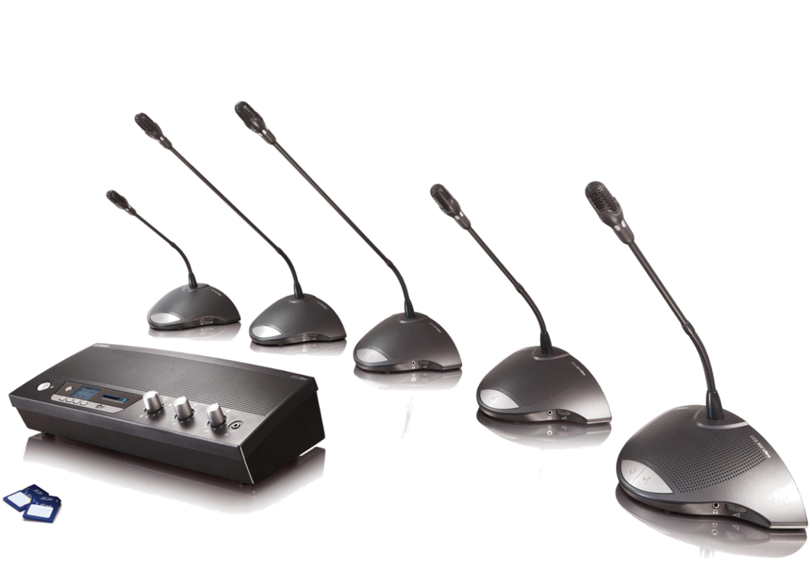

同声传译，简称“同传”，又称“同声翻译”、“同步口译”，是指译员在不打断讲话者讲话的情况下，不间断地将内容口译给听众的一种翻译方式。同传常见于大型的研讨会和国际会议，通常由两名到三名译员轮换翻译。 同声传译效率高，能保证演讲或会议的流畅进行。
在大型会议同传中，译员需通过专用的设备提供即时的翻译。这些设备是实现高级别会议、国际会议同步翻译不可缺少的一部分。通过专用设备，可以保证演讲者在台上发言的同时，演讲内容能够被同传译员转换为选定的目标语言，并通过另外的声道传送给与会代表。
一套完整的同传设备主要包括： · 同传主机（中央控制器) · 红外发射主机 · 红外辐射板 · 译员机（翻译器） · 同传间（翻译间） · 接收机
通常，译员机（翻译器）与同传间（翻译间）的个数由会议涉及语言数量决定。接收机数量根据参会人员人数确定。
